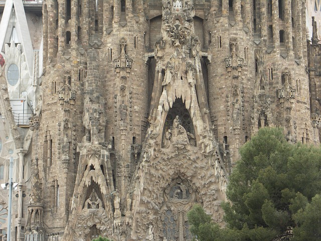
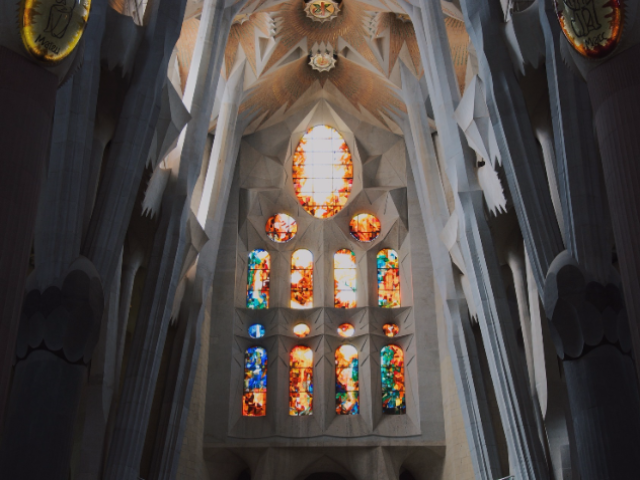

La Sagrada Familia is one of Gaudí's most famous works. It has been under construction since 1882. Gaudí was 31 years old when he started work on the cathedral dedicating 43 years of his life. He lived onsite during his last year. The cathedral includes five naves, a transept, an apse, an exterior ambulatory, three facades and eighteen towers. The facades portray the birth, passion and resurrection of Christ. The eighteen spires are dedicated to the twelve apostles, the Virgin Mary, the four evangelists and Jesus. Inside it is said to have the feel of a forest, columns branching up like trees. Aware he would not see it finished, he left plaster models and notes to be followed as a guide in the construction of the cathedral. Pope Benedict XVI visited La Sagrada Familia in 2010 and consecrated it as a basilica.
La Sagrada Familia is in it's final phase of construction and on track to be completed in 2026, the 100th year anniversary of Gaudí's death. Decorative elements however may take an additional two to six years. When completed it is sure to be a time of celebration.